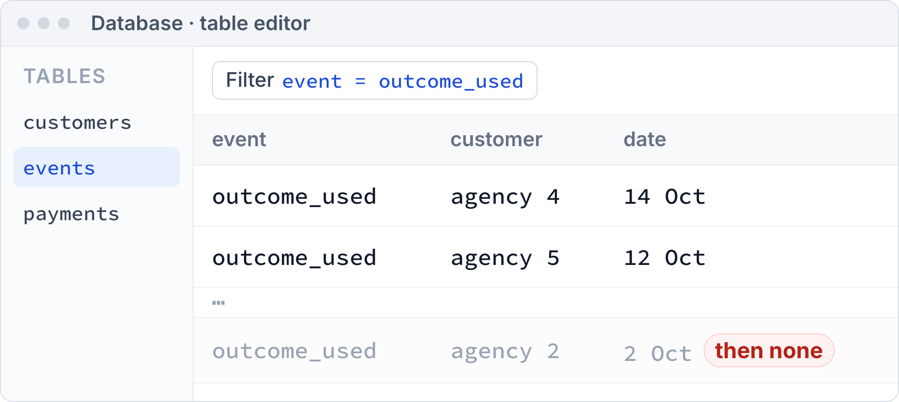
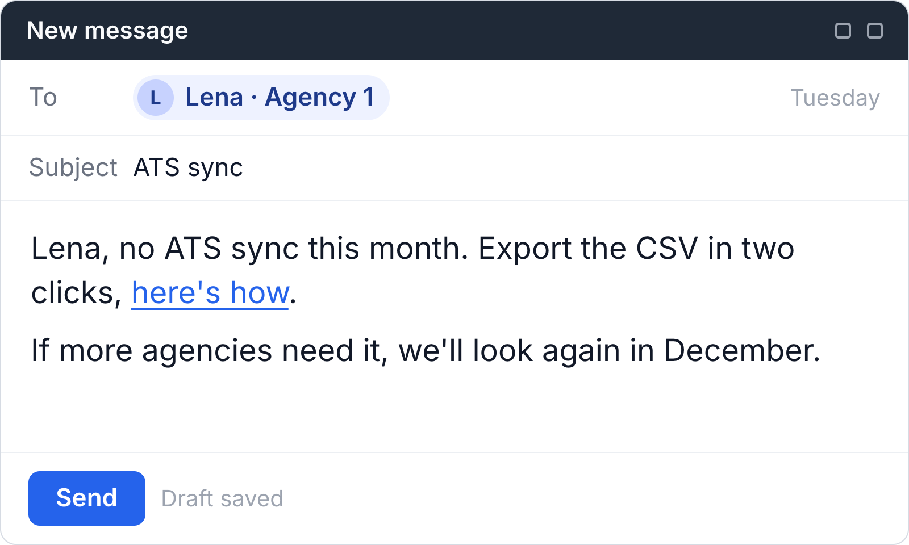
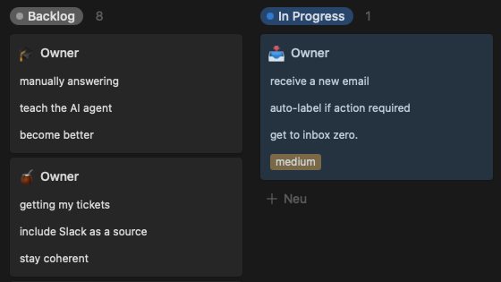
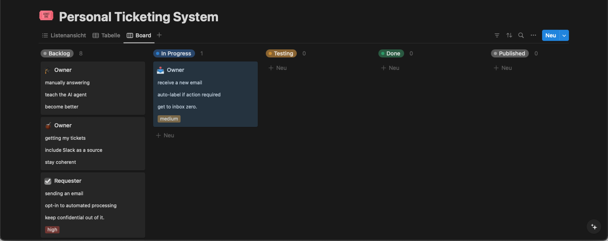
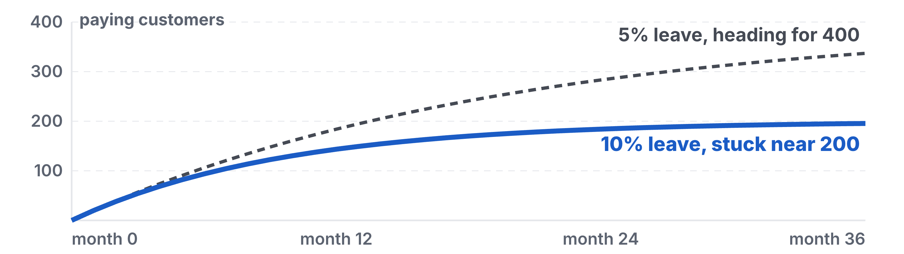
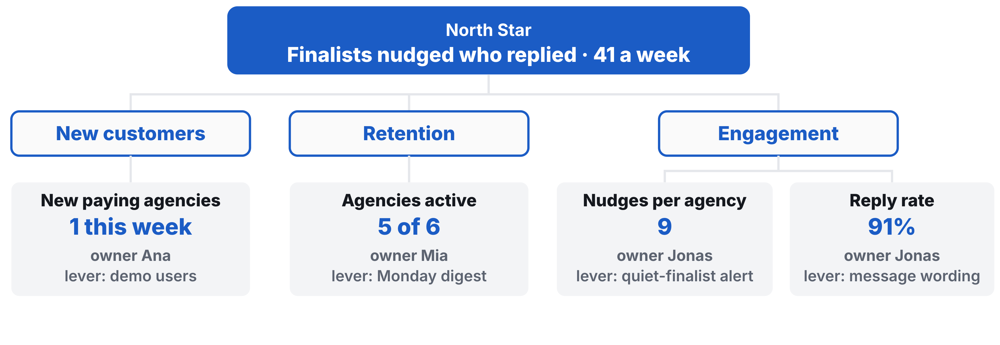
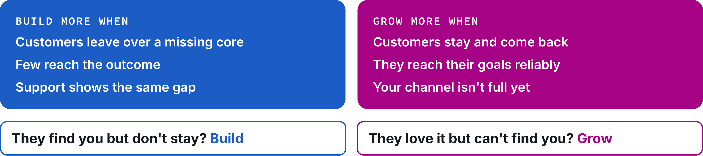

1Open the link github.com/BaNburger/AmbitiousEntrepreneurship
2Go to modules then 10-product-management
3Click the lecture PDF M10_Lecture_Product-Management.pdf, download top right
Where we are · the course
From paying users to users who stay
Thirteen sessions from first idea to first revenue. What teams have by now:
First paying users First users (M08)
Payments inside the product Prototype to product (M09)
One offer sold more than once Prototype to product (M09)
For a module on its own
Three words and one made-up company
Outcome
What a customer pays for. Your product writes a row each time it happens.
The core
The part of your product that delivers the outcome.
Kill line
A result you count, a date, and what you do if you cross it, written down before the data comes in.
Our running example, made up. A tool that nudges recruiters when a finalist goes quiet. Six agencies pay €99 a seat. Founders Ana, Jonas and Mia. Customer Lena.
Check-in · hands up
What did the market pay you, and who came back?
How much since last time?
Who used it again or paid again?
What did they ask for that you haven't built?
Pivot or persevere
Under your line? That is a decision, not a failure
Your last test: did people pay at your price, inside the product?
Accountability
Three questions, every session
Chapter 1 of 9
Previously on Ambitious Entrepreneurship
Four pictures from earlier sessions that today builds on.
Previously · Kickoff (M00)
Every feature is a bet you test in loops
Build the smallest test, measure what people do, decide
Previously · Prototype to product (M09)
They paid. Now, do they stay?
Previously · First users (M08)
The last box leaks. Count who leaves
Previously · Prototype to product (M09)
Every payment wrote a row. Those rows know who stays
Chapter 2 of 9
Your presentations
Your paying customers, who came back and what they asked for, three minutes per team.
Your presentations · make it credible
Show us where you're at in 3 minutes or less!
Facts
The offer, its unit and the tested price, and where the ask sits in the product
Numbers
Revenue from outside the social graph against the bar (€500 floor, €1,000 full), payments made inside the product, repeat customers, the path from activated to paid with its counts, the kill line next to its result
Quotes
Two price objections word for word, with roles
Images
The payment dashboard or the product's payment records, cropped without customer, card or bank data
The repeat. The same offer bought by a second customer, or the reason it has not happened.
What did you do?What did you learn (where the AI second opinion disagreed)?How can we help?
Let's jump in!
The skills that got you your first €1,000 are not the skills that get you to
€10K
Hustle brought you here. Systems take you further.
Input 1 of 4 · Chapter 3 of 9
Count it: who stays and who leaves
Count who came back from your product's records, because leavers cap your growth.
Input 1 of 4 · Count it · three questions
Are they staying?
1
Why does churn matter so much?
2
How do you know who stayed?
3
Who do you build for?
Churn
Churn is your mathematical limit to growth
20 new customers a month, 10% leave. You stop near 200
Retention
Count who came back from what your product records
Your database and payment rows, never your inbox

Came back means the outcome again, or a second payment. A kind email is not a row.
Cohorts
Read it per cohort, in counts
Under 20 people, write 4 of 5, never 80%
A
B
C
D
E
1
Cohort
Customer
Paid on
Back on (used or paid, date)
Lost, reason in their words
2
Wk 28 Sep
Agency 1 · Lena
30 Sep
9 Oct, nudge
3
Agency 2
1 Oct
"We only hire in spring"
4
Agency 3
2 Oct
10 Oct, nudge
5
Wk 5 Oct
Agency 4
7 Oct
14 Oct, nudge
6
Agency 5
8 Oct
12 Oct, nudge
7
Wk 12 Oct
Agency 6
15 Oct
too new
Student Toolkit · Pipeline · read on 20 Oct
The Sean Ellis question
Ask who would miss you. Read it as a compass
At 20 answers, 40% could be anywhere from about 22% to 61%
"How would you feel if you could no longer use [product]?"
Very disappointedSomewhat disappointedNot disappointed
Only to people who used the core at least twice in the last two weeks
Compass and verdict
What they say points. What they do decides
NPS and the Ellis question both ask about the future
Say · opinion
Points the way
"Very disappointed" share
Net Promoter Score
"We love it!"
Do · behaviour
Decides
Used the outcome again
Paid a second time
Renewed, added a seat
Ideal customer
Build for the ones who would miss you most
High valueLow valueEasyHard
Ideal customer
Most of your effort
Future target
Build toward them later
Time waster
Easy to win, hard to grow
Avoid
Walk away
Your ideal customers said "very disappointed" and came back. Their words for the main benefit are your positioning.
Now you · 3 minutes
Now you: count your keepers
!NOW YOU · 3 MIN
COUNT YOUR KEEPERS
List your paying customers by name
Mark who used the outcome again since paying
Write the count, not a percentage
Output 4 of 6, with namesMinutes 3
Input 1 of 4 · Count it · the answers
Count it: who came back, from your own records
1
Why does churn matter so much?
It caps your growth. 20 new a month with 10% leaving stops near 200
2
How do you know who stayed?
Count who came back in your product's records, per cohort, in counts
3
Who do you build for?
Those who would miss you most. What they say points, what they do decides
Input 2 of 4 · Chapter 4 of 9
Focus it: one number and its drivers
Pick one number for the value customers get, then give each driver an owner.
Input 2 of 4 · Focus it · three questions
Which number tells you it works?
1
What is your North Star?
2
How do you move it?
3
Where do you track it?
North Star
Your North Star counts what customers get, not what you get
Revenue follows from it. It is not the top of the tree
Not a North StarRevenueSign-upsFollowersPage views
Cornerstone · KPI tree, from Team (M01)
Growth splits into new customers, retention and engagement
KPI tree
Put your North Star on top, an owner on each driver
Your North Star takes growth's place on top
Focus it · tip
Count active by the outcome, not by minutes
From
"Active user = at least 5 minutes on your site in the last month."
To
"Active = reached the outcome in the last 7 days."
Minutes measure attention. The outcome measures value, and it is a row your product already writes.
Focus it · the real record
Your tree lives in the KPI Tracker
One row per driver, one column per module, filled every Monday
A
B
C
D
E
1
Metric
The kill decision (M07)
First users (M08)
Prototype to product (M09)
Product management (M10)
2
North Star (your weekly count) · finalists nudged who replied
18
33
41
3
· New paying agencies
1 in 7 days
4
· Agencies active
5 of 6
5
· Nudges per agency
9
6
· Reply rate
91%
7
Paying Customers
1
4
5
6
8
Revenue (€)
49
594
1,089
1,287
Student Toolkit · KPI Tracker · drivers added under the North Star from today
Know your numbers! Are you sticky?
Growth shows whether your tree works
Bastian's rule of thumb for growth, month over month
Must be > 10% Should be > 20% Outstanding at > 25%
Now you · 3 minutes
Now you: name your North Star
!NOW YOU · 3 MIN
NAME YOUR NORTH STAR
Write what happens when a customer gets what they pay for
Count it per week
Name three drivers and an owner each
Output A North Star and three ownersMinutes 3
Input 2 of 4 · Focus it · the answers
Focus it: one North Star, an owner per driver
1
What is your North Star?
A count of what customers get, not what you get
2
How do you move it?
Through its drivers, new customers, retention and engagement, each with an owner
3
Where do you track it?
In the KPI Tracker, one row per driver, filled every Monday
Input 3 of 4 · Chapter 5 of 9
Choose it: build less, refuse more
Every yes costs more than it looks, so bet on what payers need and refuse kindly.
Input 3 of 4 · Choose it · three questions
What do you not build?
1
Why build less when building is cheap?
2
Which requests do you keep?
3
How do you say no?
Managing startups, the sure-fail way
Here's how to fail at managing a startup
From: your CEO · To: teamtoday
tl;dr: become AI-first asap;
Team, quick brain dump from your slightly sleep-deprived CEO: AI vibes are all over rn, impact tbd tbh but Q4 we need to raise and afaik investors just wanna see AI usage + graphs go up, so we're "aligning" on a NSM later lol;
pls crank out more 10x-ish features, slap "AI-powered" and agents on everything, and tighten GTM so sales/product/marketing aren't speedrunning in diff dirs while our PLG story still kinda works;
ship fast, dump stuff in Notion, put OKRs on top, dashboards trending up = lgtm, Slackbot already lgtm, react with 🚀/✅ and lmk eod if this works for you, xoxo.
The mindset shift
Ask "should we build this?", not "can we?"
AI made building cheap. Deciding stayed expensive
Early stageFrom now on
"Can we build this?"
"Should we build this?"
"Say yes to every customer"
"Serve the right customers deeply"
"Features = progress"
"Outcomes = progress"
"Ship fast, fix later"
"Ship right, iterate fast"
What a yes costs
Every yes costs more than it looks
Building is the small bar. Debugging and interruptions are the big ones
Most ideas miss
Most ideas don't move the number they aim at
Share of tested ideas that improved their target metric
Bets
Write every request as a bet before you build it
In a trial with 116 startups, founders who tested hypotheses performed better
A bet names who asked, the driver it should move and the effect you expect, written before you build.
What to build?
Every bet adds, removes or exchanges a feature
Add a feature+ Build what customers want+ Create the whole product– Feature creep– Harder to maintain
Remove a feature+ Streamline the product+ Easier to maintain– Takes away from customers– Might be the value
Exchange a feature+ Build a better service+ Reduce technical debt– Old one was good enough– Hard to measure
The filter
Keep what payers need. Bury the rest
A paying customer asked and it deepens their outcome, or it fixes why someone left
RICE
Rank the keepers by reach, impact, confidence and effort
Score = reach × impact × confidence ÷ effort
Bet
Reach
Impact
Confidence
Effort
Score
Quiet-finalist alert
6 agencies
2
80%
1 week
9.6
ATS sync
1 agency
2
50%
4 weeks
0.25
The score sorts the list. It does not decide for you. A bet that fixes why customers leave can jump the queue.
Now you · 3 minutes
Now you: write one bet
!NOW YOU · 3 MIN
WRITE ONE BET
Pick your loudest request from a paying customer
Name the driver it moves and the effect you expect
Score it, reach times impact times confidence over effort
Output One bet with an effect and a scoreMinutes 3
Roadmap
Now, Next, Later. One Now bet per founder
Saying no
Say no kindly, even to a customer who pays
A no with a workaround keeps the customer. Silence loses them

How to say no gracefully"Not right now, but here's when…""Here's why we're prioritizing X instead""Let me show you how to do Y instead"
Choose it · tip
Tech debt is a bet too
Your agent-written code got you here fast. Decide when to pay it down
Fix nowSecurity holesData loss risksBugs customers hit
Schedule itCode that slows you downMissing tests for core flowsDeploy friction
Live with itUgly but working code"Nice to have" refactorsFeatures nobody uses
Now you · 4 minutes
Now you: bury one feature
!NOW YOU · 4 MIN
BURY ONE FEATURE
Pick one request you won't build
Write the two-line no to who asked
Send it today
Output One no, ready to sendMinutes 4
Input 3 of 4 · Choose it · the answers
Choose it: bets for payers, a kind no for the rest
1
Why build less when building is cheap?
Every yes costs more than it looks, and most ideas don't move the number
2
Which requests do you keep?
What payers need, written as bets and ranked by reach, impact, confidence and effort
3
How do you say no?
Kindly, with a workaround, even to a customer who pays
Input 4 of 4 · Chapter 6 of 9
Run it: the week, build or grow
Let the tree pick build or grow, ship small, and keep one founder selling.
Input 4 of 4 · Run it · three questions
How do you run the week?
1
Build or grow?
2
How much process do you need?
3
How do you ship?
Cornerstone · the three stages
Next stage, the growth phase. First step, build to validate
Build or grow
Build or grow? Your tree decides
They find you but don't stay?Build
They love it but can't find you?Grow
Recruiter tool: 5 of 6 stay, 1 new a weekGrow
Bastian's view
Warning! Heavy process is overkill at five people
WARNING Classical SCRUM is process overkill!
WARNING OKRs are not fit for small companies!
Heartbeats
Hang the plan on a heartbeat you can't move
Pick a date the world sets, so the plan can't slide
"The best external heartbeats aren't set by the company but by outside forces."
Tony Fadell, Build (2022), chapter 3.5, "Heartbeats and Handcuffs"
One board · Bastian's own
One board, one thing in progress per person

2

1Backlog: don't touch during the week
2In progress: only 1 per person
3Testing: only by the feature's owner
4Published: when live for customers
The weekly meeting
Read the tree together, once a week
One meeting, four items, every Monday
"If you do it twice, write it down."
1
The treeNorth Star and drivers against the week before
2
The past week's betsEach against its expected effect
3
The coming weekThe Now list and the no's to send
4
SellingWho is on the pipeline, how many asks
Ship small
Ship each bet in small, tested steps
Expected effect first, then the brief, the step, the test, the save
The standing rule
Every single day, at least
1founder sells
Building never pauses selling. Name the founder on the pipeline before you leave the room.
Now you · 3 minutes
Now you: pick your mode
!NOW YOU · 3 MIN
PICK YOUR MODE
Choose build or grow for the next stretch
Name the founder on the pipeline
Name your next outside deadline
Output A mode, a name, a dateMinutes 3
Input 4 of 4 · Run it · the answers
Run it: the tree picks, you ship small
1
Build or grow?
Your tree decides. Leaving means build, staying but few means grow
2
How much process do you need?
Little. One board, one thing in progress per person, one meeting on the tree
3
How do you ship?
Each bet in small, tested steps, its expected effect first
Chapter 7 of 9
Wrap-up and check-out
Three pictures to keep, three questions to reflect on, and your week.
Recap · today
Who stays, one number, build or grow
WHO STAYS

ONE NUMBER

BUILD OR GROW

Reflection 1 of 3 · the content
What could you apply?
🛠️
What could you apply?
🤕
What gave you a hard time?
Reflection 2 of 3 · the process
Man vs. machine
🤖
Where did AI actually help you?
🧠
Where was your genius needed?
🕴️
What are your best hacks to share?
Reflection 3 of 3 · the results
Rose, thorn, bud
🌹
What was the breakthrough today?
🌵
What was the hardest part today?
🌱
What is an idea/feature you didn't have time to finish, but want to explore later?
Homework until next time
Reach €3,000 cumulative revenue from outside your social graph, shown in your payment dashboard or on paid numbered invoices.
€3,000full bar
The learning floor is €1,000 cumulative.
Your kill line sits in the Kill Criteria Log, dated, before you open your records. No line? "If fewer than half of our paying customers who paid 14 or more days ago used the outcome or paid again by [the day before Module 11], we build no new feature next week and fix the core with the ones who left." Log it before you open your records. Answers to the question never count.
Homework · how to do it
Count, cut, ship, sell
1
Skipped the workshop? Run its three steps as a team first (Feature Graveyard).
2
Read your records, not your inbox. Each paying customer once.
3
Call those who left within two days. Ask what happened last time.
4
Read the question's answers next to who came back. The "very disappointed" who returned would miss you most.
!
Watch out. Under 20, write counts.
5
Ship Now bets in small, tested steps, effect written first. Missed? No sequel.
6
Say no in writing to every customer whose request you buried.
7
Keep one founder selling daily, your Pipeline's "later" answers first.
8
Read your tree together weekly. Write down any chore done twice.
9
Get a blind second opinion. Give an AI your raw records, no names or hypothesis. Note where it disagrees.
Homework · what you come back with
Good is counted, bet on and read weekly
GOOD
WEAK
Staying
5 of 7 back, 2 lost, reasons in their words
"Retention 71%"
Building
2 bets shipped, 1 hit its effect
6 features nobody asked for
Rhythm
41 nudges replied, read every Monday
A dashboard nobody opens
References · 1 of 2
Sources in this deck
Camuffo, A., Cordova, A., Gambardella, A. & Spina, C. (2020). A scientific approach to entrepreneurial decision making. Management Science, 66(2), 564–586.
Camuffo, A., Gambardella, A., Messinese, D., Novelli, E., Paolucci, E. & Spina, C. (2024). A scientific approach to entrepreneurial decision-making: Large-scale replication and extension. Strategic Management Journal, 45(6).
Ellis, S. (2009). The startup pyramid. Startup Marketing Blog.
Fadell, T. (2022). Build. Harper Business, chapter 3.5.
Graham, P. (2012). Startup = Growth. paulgraham.com.
Keiningham, T., Cooil, B., Andreassen, T. & Aksoy, L. (2007). A longitudinal examination of Net Promoter and firm revenue growth. Journal of Marketing, 71(3).
References · 2 of 2
Sources in this deck
Kohavi, R., Crook, T. & Longbotham, R. (2009). Online experimentation at Microsoft. Data Mining Case Studies.
Kohavi, R., Deng, A. & Vermeer, L. (2022). A/B testing intuition busters. KDD 2022.
McBride, S. RICE: Simple prioritization for product managers. Intercom blog.
Mochary, M. (2019). The Great CEO Within.
Vohra, R. (2018). How Superhuman built an engine to find product/market fit. First Round Review.
Amplitude, The North Star Playbook. ProdPad, Now-Next-Later (Bastow, 2019). Course: frameworks 02 and 06, GRADING_RUBRIC, Glossary.
Bury it, ship it, sell it. See you in Founder health (M11)!
Reach €3,000 cumulative revenue from outside your social graph, shown in your payment dashboard or on paid numbered invoices.
€3,000full bar
The learning floor is €1,000 cumulative.
Your kill line sits in the Kill Criteria Log, dated, before you open your records. No line? "If fewer than half of our paying customers who paid 14 or more days ago used the outcome or paid again by [the day before Module 11], we build no new feature next week and fix the core with the ones who left." Log it before you open your records. Answers to the question never count.
Workshop · step 1 of 3
Count who stayed
1STEP 1 · 25 MIN
COUNT WHO STAYED
Who came back, from your product's records.
Log your line before you open your records
List every paying customer and first payment date
Mark who came back, with dates, counts under 20
Ask core users: very, somewhat, not disappointed?
Output A line, customers marked, question sent.Minutes 25
Workshop · step 2 of 3
One number, every bet
2STEP 2 · 30 MIN
ONE NUMBER, EVERY BET
One number, and every idea as a bet.
Pick a North Star, weekly value paying customers get
Break it into 3 to 5 drivers with owners
Write every request, idea and fix as a bet
Keep what deepens a payer's outcome or fixes a loss
Rank the keepers by impact and effort, or RICE
Output North Star, tree, every request a bet.Minutes 30
Workshop · step 3 of 3
Bury, choose, commit
3STEP 3 · 35 MIN
BURY, CHOOSE, COMMIT
Say no, pick the stretch, commit.
Bury the rest, one line on why
Write the no to each payer who asked, send one
They stay but few find you? Grow. They leave? Build
Now, Next, Later against a date you can't move
Commit to the bar, targets, midweek pace
Output No's sent, build or grow, Now list, targets.Minutes 35
Arrived empty-handed?
No paying customers yet? Count your activated users
No paying customers yet? Use your activated users from the Use Log. No product records? Mark from your payment dashboard and add the outcome row this week.
Bury it, ship it, sell it. See you in Founder health (M11)!
Module 10 · Product Management & Growth · Case discussion · about 90 minutes
Case discussion: Tally
Sit with Marie Martens and Filip Minev in late July or early August 2021 and decide what a two-founder form builder builds next.
Case · Tally, Belgium, late July or early August 2021 · vote 1 of 2
What should Minev build next?
Option 1
Integrations
Option 2
Customization
Option 3
Analytics
Option 4
Onboarding
Option 5
Something else
Option 6
No new feature, grow
Case · what happened until late July 2021
One year, one builder, and a roadmap that kept growing
Nothing after the case moment
Case · Exhibit 2 · 30 minutes
66 of 115 would be very disappointed. Do they stay?
Answers when the results were published on 5 August 2021
Case · Exhibit 1 · which number?
Which of these numbers tells you whether users stay?
The founders' own figures, dated
Late 2020What they watched
People who tried it
Forms made
Forms shared, responses received
Revenue, 1 to 2% expected to pay
26 July 2021What they reported
7,500 users
$2.4K MRR, the "primary metric"
"7% weekly and 15% monthly (MRR)"
"about 3% conversion"
5 August 2021 · 10 days laterWhat they published
8,000 users
100 Tally Pro users
$2.4K MRR
"User" never defined
Case · Exhibit 3 · 20 minutes
Seven requests. Which one next?
Request group
Users asked for
On the roadmap, 6 July 2021
Since
Pro, Nov 2020
Analytics and reporting
Visual results, open and response rates
Analytics 4th of 21
By Apr 2021
No
Customization
Colours, fonts, themes, columns
Columns 10th, fonts and colours 16th, 3 more 17th to 19th
Nov 2020
No
Integrations
Sheets, Notion, webhooks, API
Webhooks 1st, API access 2nd
Nov 2020
No
Payment options
PayPal
PayPal 13th, subscriptions 3rd
Nov 2020
Subscriptions*
Onboarding
Templates, examples of use
No item. Gallery live since Nov 2020
Not listed
No
UX improvements
Grouping blocks, Undo
Undo planned 5 to 11 Jul, not shipped
By Jun 2021
No
Embed options
Video, a form over the page
Video 15th, pop-up form 12th*
Nov 2020
Pop-up form
Case · the board plan
One row per request, the same five questions
Votes · first count · second count
Request group
Who asked (what the case says)
Do they pay?
Number it should move
Cost for one builder
Keep or refuse
Integrations
Customization
Analytics
Onboarding
Payments, UX, embeds
Numbers that don't add up
Case · build or grow · 10 minutes
Should the next weeks go to building at all?
A free plan that, in Martens's words, needs "a lot more users to grow"
Their time
50/50building and marketing
About half each. Both wanted more for marketing and content
Their plan for growth
Communities, the badge, then "user-generated content and SEO"
The badge
~10%of new users came through it
About one new user in ten
The summer
"growth started slowing down, which made us nervous", Martens wrote in October 2021

![A roadmap board in a board tool, no dates, updated every Monday. Now, two cards, limit 1 per founder, one bet per founder, its effect written: Quiet-finalist alert, Jonas, driver nudges per agency, expected from 9 to 12 a week, asked by Lena and 2 more agencies, all paying. Monday digest, Mia, driver agencies active, expected from 5 to 6 of 6. A dashed slot, Ana: no build bet, she sells. Next, roughly scoped, may change: Weekly report for hiring managers, rough scope. Later, direction, no promise: ATS sync, if three payers ask, 1 of 3 asked: Lena](media/m10-roadmap-board.png)